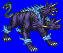
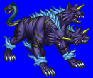
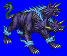
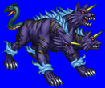

Height: Several dozen times human height Weight: ???
Habitat: Hell Origin: Greece
Meaning: Thought to be derived from "Centiceps Bellua", meaning "hundred-headed animal"
The three-headed dog that watches over the gates of Hell. The number of heads shown is three, but it is thought that perhaps it had 50 or 100 heads in early depictions. After a protracted battle, Cerberus was removed from Hades by Heracles during one of his Twelve Labors. In addition to this theory, it is also conjectured that it had as many tails, all of different types, such as snake or dragon. Its blood is a vicious poison, which was used by Madea in her attempt to murder Theseus.